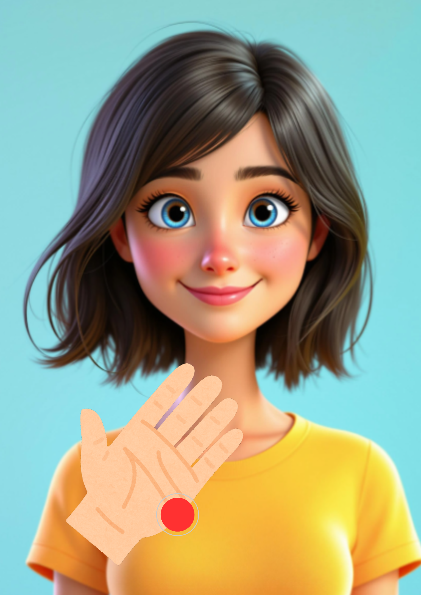

We beginnen met het karatepunt. Dit is de zijkant van je hand, tussen je pink en pols. Dit is het punt waar je met je hand zou slaan in karate.
Kloppend met twee vingers (meestal wijs- en middelvinger) ongeveer 5-7 keer. Je hoeft niet hard te kloppen, een zacht tikken is voldoende.
